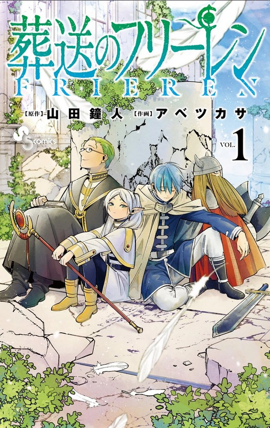
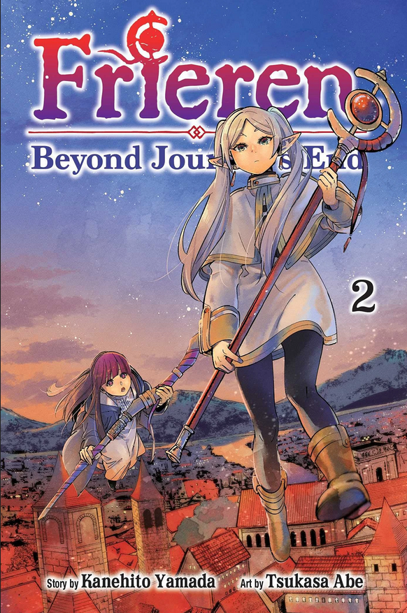

Frieren Beyond Journey End Vol.1

Volume pertama Frieren: Beyond Journey's End bukanlah awal dari sebuah petualangan epik, melainkan sebuah refleksi melankolis tentang apa yang terjadi setelah "kemenangan" itu sendiri. Cerita dimulai tepat saat kelompok pahlawan—penyihir elf Frieren, pahlawan Himmel, pendeta Heiter, dan pejuang Eisen—kembali ke ibu kota setelah sepuluh tahun menaklukkan Raja Iblis. Bagi rekan-rekannya yang manusia, sepuluh tahun adalah bagian besar dari hidup mereka, namun bagi Frieren yang berumur panjang, itu hanyalah sekejap mata yang tidak berarti Ketidakpedulian emosional Frieren mulai terkikis ketika ia menyaksikan kematian Himmel karena usia tua, sebuah momen yang menyadarkannya betapa sedikit waktu yang ia habiskan untuk benar-benar mengenal pria yang mencintainya tersebut. Penyesalan ini mendorongnya untuk memulai perjalanan baru ke arah utara, kali ini ditemani oleh murid mudanya, Fern. Volume ini dengan indah memadukan visual yang tenang dengan narasi tentang fana dan waktu, mengubah kiasan fantasi standar menjadi meditasi mendalam tentang bagaimana kita menghargai hubungan antarmanusia sebelum semuanya terlambat.
Baca Selengkapnya...Frieren Beyond Journey End Vol.2

Volume kedua Frieren: Beyond Journey's End memperdalam dinamika antara masa lalu dan masa depan saat Frieren dan muridnya, Fern, melanjutkan perjalanan mereka menuju *Aureole*, tempat peristirahatan terakhir para jiwa. Volume ini memperkenalkan Stark, seorang pejuang muda yang penakut namun berbakat, yang pernah menjadi murid Eisen. Melalui interaksi dengan Stark, pembaca mulai melihat sisi lain dari Frieren—bukan sekadar penyihir yang dingin, melainkan sosok guru yang perlahan mulai memahami nilai dari "mewariskan" tekad dan keahlian kepada generasi berikutnya. Konflik utama dalam volume ini memuncak pada pertemuan mereka dengan para utusan dari Luger si Algojo, yang mengungkap sifat asli iblis dalam semesta ini sebagai makhluk pemangsa yang hanya menggunakan bahasa untuk menipu manusia. Pertarungan yang terjadi bukan sekadar adu kekuatan sihir, melainkan pembuktian dari efisiensi dan ketenangan Frieren yang telah terasah selama ribuan tahun. Dengan nuansa yang tetap tenang namun penuh ketegangan, volume kedua ini mempertegas bahwa perjalanan Frieren bukan lagi tentang membunuh Raja Iblis, melainkan tentang menebus waktu yang hilang dengan memahami hati manusia melalui mereka yang ia temui di jalan.
Baca Selengkapnya...Frieren Beyond Journey End Vol.3

Volume ketiga Frieren: Beyond Journey's End menyajikan salah satu momen paling ikonik dalam seri ini, yaitu konfrontasi puncak melawan Aura sang Pencincang, salah satu dari Tujuh Bijak Kehancuran. Pertarungan ini menjadi panggung bagi Frieren untuk menunjukkan jati dirinya yang sebenarnya sebagai "Frieren sang Juru Sita Pemakaman." Melalui kilas balik yang menyentuh, kita melihat bagaimana mentor Frieren, Flamme, mengajarkannya teknik untuk menyembunyikan kekuatan sihir sebagai taktik psikologis melawan iblis yang sombong. Kemenangan Frieren atas Aura bukan diraih melalui ledakan kekuatan yang kasar, melainkan melalui ketenangan dan pengalaman ribuan tahun yang absolut. Di sisi lain, volume ini juga memperkuat ikatan antara karakter utama saat Stark dan Fern harus berhadapan dengan bawahan Aura, memaksa mereka untuk melampaui batasan diri masing-masing. Setelah ancaman iblis di wilayah Graf Granat teratasi, perjalanan berlanjut dengan suasana yang lebih kontemplatif. Pembaca diajak melihat bagaimana jejak-jejak kecil yang ditinggalkan kelompok pahlawan di masa lalu—seperti patung yang mulai berlumut atau tradisi lokal—masih hidup dan memberikan warna pada dunia. Volume ini secara sempurna menyeimbangkan aksi sihir yang mendebarkan dengan tema sentralnya: bahwa warisan seseorang tidak diukur dari seberapa besar kekuatan mereka, melainkan dari kenangan yang mereka tinggalkan di hati orang lain.
Baca Selengkapnya...